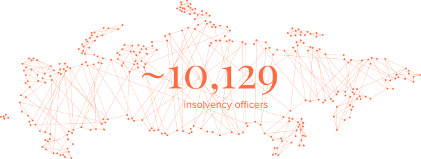
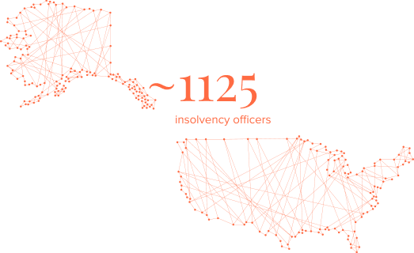
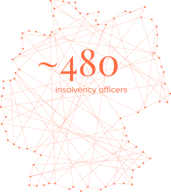
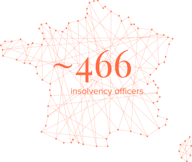

Appointment of insolvency officers in Russia
and foreign jurisdictions
The insolvency officer has a special place among the participants in the bankruptcy case. In many ways, he or she is the central figure of any procedure, whose conclusions, decisions, and actions significantly affect the debtor and related persons, creditors, as well as other persons involved in the bankruptcy process.
Insolvency officer’s status in Russian law is constantly changing. This is largely due to the search for the best ways to ensure the independence of insolvency officers, including, for example, clarifying the approaches to disclosure related See, for example: Federal Law No. 482-FZ of 12.29.2014 “On amendments to the Federal Law ‘On insolvency (bankruptcy)’ and the Code of Administrative Offences of the Russian Federation” to the debtor by third parties at the request of insolvency officers, or ensuring sufficient funding for ongoing procedures, which is widely discussed in the professional community.
The draft Federal law “On amendments to the Federal law
Draft Federal law
“On amendments to the Federal law ‘On insolvency (bankruptcy)’ and certain acts of the Russian Federation”.
URL: https://regulation.gov.ru/
projects#npa=100272
(the date of access: 05.01.2020).
and certain acts of the Russian Federation” published in March 2020 by the Ministry of economic development of the Russian Federation proposed changes to the model for appointing insolvency officers in bankruptcy cases, where the discretion of the arbitration court gives way to random selection in combination with a number of additional factors. The proposed model, as the authors of the draft law note, is due to the need to eliminate the frequent dependence of the insolvency officer on the creditor who has proposed him or her.
The purpose of this study is a comparative legal analysis of current models for appointing insolvency officers in bankruptcy cases of legal entities in Russia, France, Austria, Germany, the United States, and China in the context of ensuring the independence of insolvency officers from participants in bankruptcy proceedings.
Quantity of insolvency officers in the countries represented in this study 1

1 Expected for China
1 Expected for China

1 Expected for China

1 Expected for China

1 Expected for China
However, the appointment of insolvency officers in bankruptcy cases cannot be properly disclosed without understanding the status of the insolvency officer in general, since the independence of the insolvency officer is influenced by a large number of factors: from the threshold for entering the profession to stable financing of bankruptcy proceedings. In this regard, the objectives of the study include a wide range of issues, including the status of the insolvency officer in general:
- description of the main elements of the status of an insolvency officer in each of the selected jurisdictions;
- description of the model for appointing insolvency officers in bankruptcy cases in Russia, identification of tools and mechanisms that limit the independence of insolvency officers;
- description of models for appointing insolvency officers in bankruptcy cases in France, Austria, Germany, the United States, and China;
- identification of common features and differences in the described models for appointing insolvency officers in bankruptcy cases;
- description of the advantages and disadvantages of the analyzed models in the light of the implementation of the principle of independence of insolvency officers;
- description of the risks of accepting a particular model for appointing insolvency officers or its individual elements in bankruptcy cases in Russia.